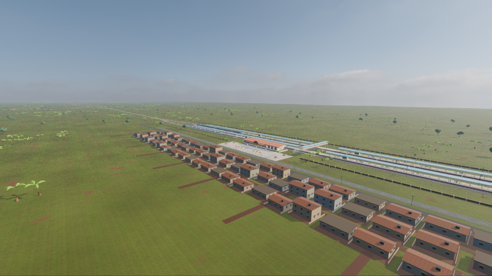
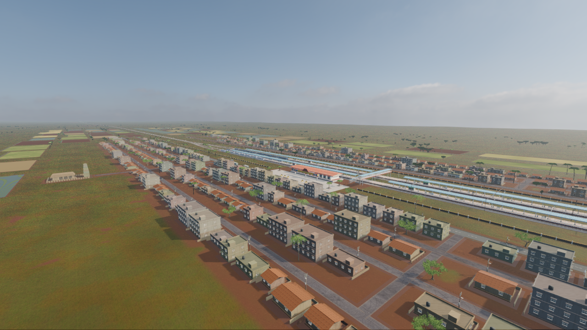
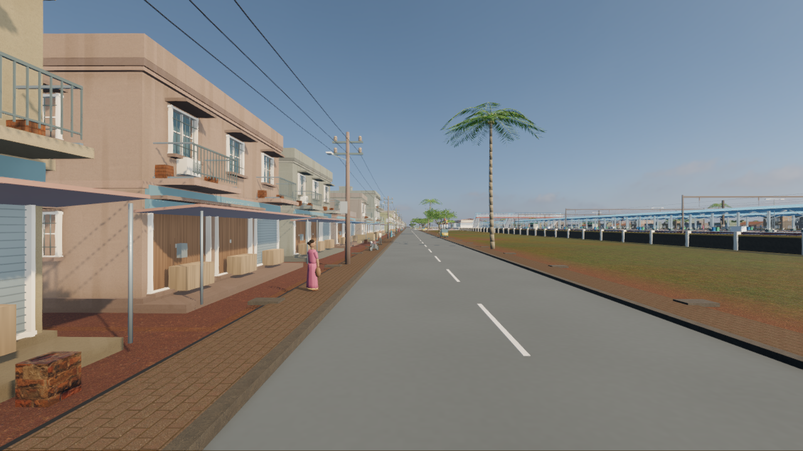
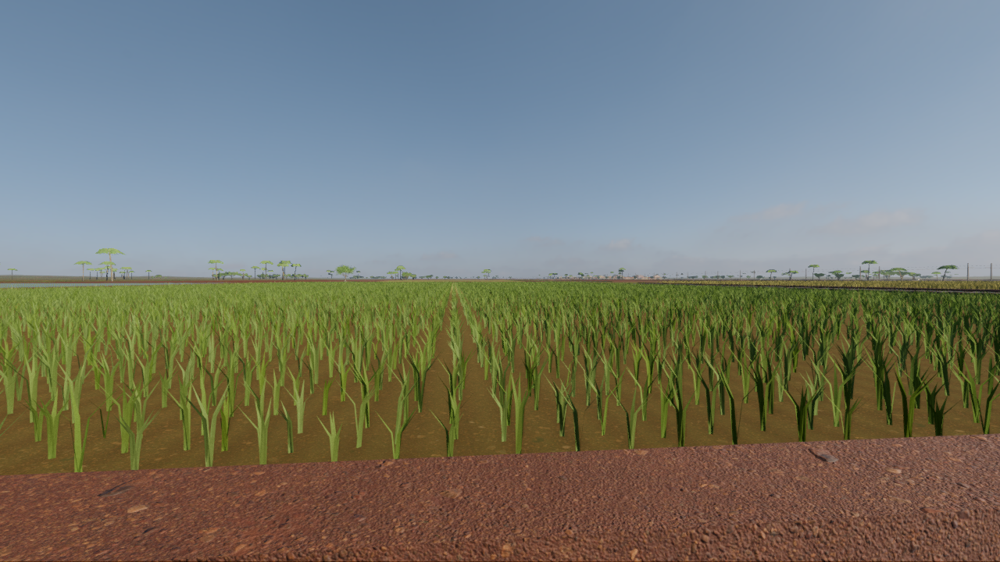

Three station towns, four villages, agricultural plots and roadside activity replace the sparse corridor scenery. Drag the slider to compare the same station viewpoint before and after the rebuild.


BeforeAfter
0% shows the new scenery; 100% shows the previous scenery. The slider also works with the arrow keys.
Station streets

Original Blender buildings and street props, English/Tamil signs, bus bays and moving decorative road traffic.
Working countryside

Field bunds, irrigation, canal banks, crop geometry and tropical planting connect the settlements.